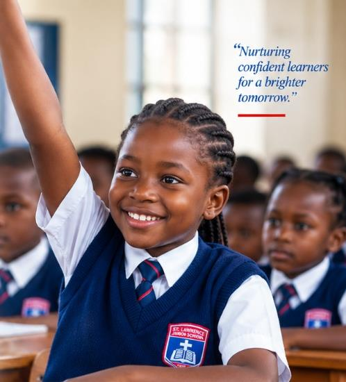
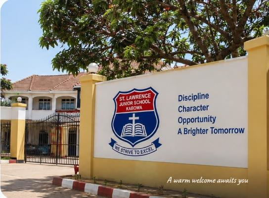

ST. LAWRENCE
Junior School - Kabowa

Excellence in Education Since 2010
A strong foundation. A brighter tomorrow.
St. Lawrence Junior School Kabowa was founded in 2010 with a simple yet powerful vision — to provide quality education that nurtures every child's potential. Over the years, we have grown into a respected learning community, known for academic excellence, discipline, character and a caring environment.
Our Journey
“Nurturing confident learners for a brighter tomorrow.”
A small community with a big vision.
Expanding opportunities and strengthening our learning environment.
Continuing to nurture compassionate, responsible learners for the future.
The guiding principles that shape every aspect of life at St. Lawrence Junior School Kabowa. They inspire our teaching, our learning, and our commitment to every child.
To provide quality, holistic education that nurtures academic excellence, moral values, and practical skills, empowering every child to reach their full potential and become responsible citizens who contribute positively to society.

To be the leading primary school in Uganda, recognized for academic excellence, character development, and innovative teaching that prepares learners for a brighter future.
A daily reminder of our commitment to high standards, discipline, and the continuous growth of every learner.
“A strong foundation today. Brighter possibilities tomorrow.”
A remarkable journey of growth, learning and community, shaped by vision, hard work and an unwavering commitment to every child's future.
“Building tomorrow, together.”
St. Lawrence Junior School Kabowa was established with a clear vision — to provide quality education to the community. We began with a small but determined team, laying the foundation for what would become a beacon of learning in Kabowa.
Where it all began

We expanded our facilities with new classrooms and improved learning spaces, allowing us to welcome more learners and better serve the community.
We strengthened our academic programs and co-curricular activities, creating more opportunities for learners to discover and develop their God-given talents.

Learning for a brighter future

We introduced modern learning resources, including ICT facilities, to prepare our learners for a changing world and to enhance the teaching and learning experience.
We deepened our connection with parents, alumni and the wider community, working together to create a supportive and nurturing environment for every learner.

A community that cares

Today, we stand proud of how far we have come, while remaining focused on the future — to inspire, educate and prepare every child to make a positive difference in the world.
“A strong foundation today. Brighter possibilities tomorrow.”
Take a virtual walk through our facilities and see what makes
St. Lawrence Junior School Kabowa special.

See where learning happens
Meet our vibrant school family
A safe and nurturing space
ST. LAWRENCE JUNIOR SCHOOL KABOWA
WE STRIVE TO EXCEL
Come and experience St. Lawrence Junior School Kabowa for yourself. We welcome prospective parents, learners and visitors to tour our campus, learn more about our programs and see the vibrant school community in action.
Have a specific enquiry? You can also get in touch through our Contact Page.

2 Gabunga Road,
Kabowa, Kampala
Monday – Friday
7:00 AM – 5:00 PM
“More than a school, a home for brighter futures.”
ST. LAWRENCE JUNIOR SCHOOL KABOWA